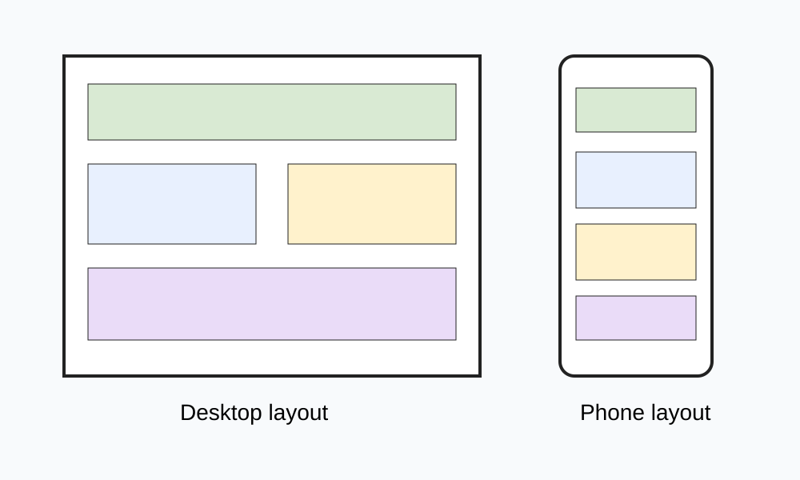

Lesson 04
Layout, Navigation and Devices
Improve how the page works for users
Use the browser in full screen. Scroll or use Page Down to move through slides.
Today
Improve structure and readability.
Structured Information
Headings, sections and media help users understand information.
Devices
The same webpage may appear differently on phones, tablets and desktop monitors.

Navigation
One-page websites can still use clear section order and links.
Your Task
Improve layout, heading order and device preview.
Exit
What changed and why did it help the user?